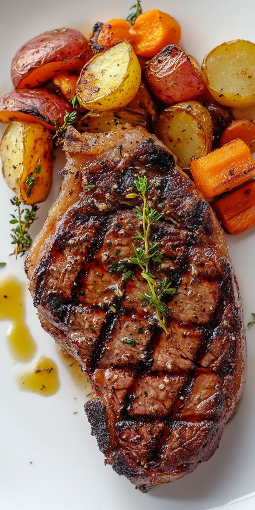
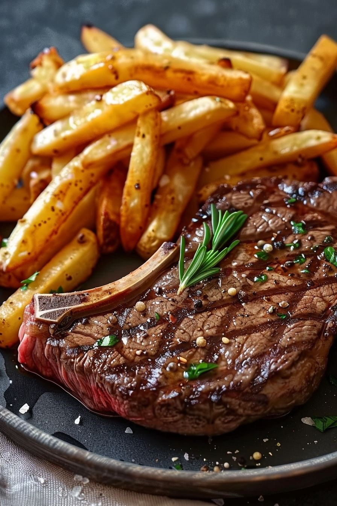

les delices de pikinoise
ce plat est a base de viande;legume et fromage
ceci est faite a base de farine;sauce;thon
sauce d oignon et viande
ce plat est compose de poulet en morceaux;marinés dans un mélange d ognons;de jus de citron vert;de vinaigre et d huile d arachide
ceci est un plat senegalais compose d une base de riz dans un sauce a la pate d arachide;il s accompage generalement de viende et de legumes
le firire est un plat de la cuisine senegalaise à base de poisson frit et d une sauce aux oignons;accompagné de frites; salade et pain
composé de une bouillie de mil;lait caillé sucré
composé a base jus de baobab et le beurre de cacao
ce dernier et coposé de semoule de mil et du lait caille sucré